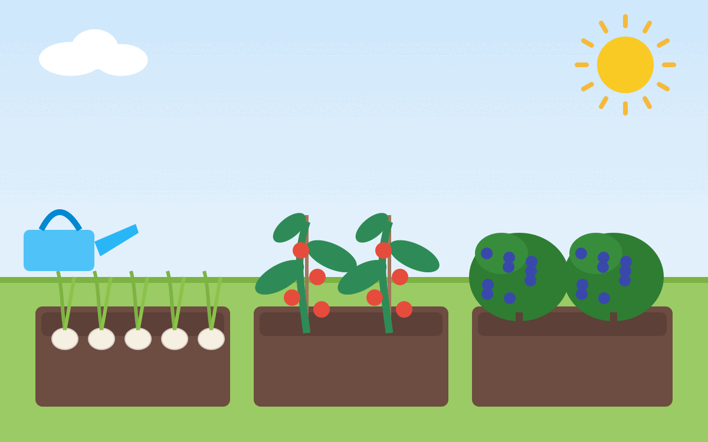

{kind=link}

Karotten
Kartoffeln
Knoblauch
- Standort: Sonnig
- Boden: Locker, humusreich, nicht sandig, keine Staunässe
- Pflanzzeit: 15. September bis 10. Oktober (Winterknoblauch) oder Januar/Februar (Sommerknoblauch)
- Erntezeitpunkt: ab Juli (Winterknoblauch) bzw. August (Sommerknoblauch); sobald sich das Laub braun verfärbt
- Saattiefe: 5cm
- Pflanzabstand: 10x20cm
Quellen:
Zwiebeln
- Standort: Sonnig, guter Wind
- Boden: -
- Pflanzzeit: März bis April
- Erntezeitpunkt: ab August, wenn das Laub austrocknet und einknickt
- Saattiefe: Bei der Steckzwiebel sollte der obere Teil der Zwiebel aus dem Boden schauen
- Pflanzabstand: 5-10 cm
Quellen:
Tomaten
- Standort: Sonnig, warm, wind- und regengeschützt
- Boden: Humus- und nährstoffreich
- Pflanzzeit: Vorziehen ab März, Auspflanzen nach den Eisheiligen (Mitte Mai)
- Erntezeitpunkt: Juli bis Oktober
- Saattiefe: 0,5-1 cm
- Gute Nachbarn: Knoblauch, Kohl, Kohlrabi, Salat
- Schlechte Nachbarn: Fenchel, Gurke, Kartoffeln, Erbsen
Quellen:
Salat
Heidelbeeren
- Boden:
- sauer, pH=4-5,5 (Moorbeet-Erde oder Rhododendron-Erde).
- Deshalb auch besser im Topf (min. 30L, eher flacher; mit Loch im Boden, um Staunässe zu vermeiden) als im Beet
- Rhododendron-Langzeitdünger
- Rindenmulch (ca. 5cm) abdecken
- Anpflanzen: Gut angießen
- Düngen: Vinasse (?) Flüssig-Dünger
- Pflanzzeit: Herbst oder Frühjahr
- Ernte:
- Juli bis September, je nach Sorte
- dauert 5-8 Jahre, bis der Strauch voll ertragreich ist
- im YouTube-Video ist von bis zu 17kg pro Pflanze die Rede; üblich sind eher 2-5kg
- Schädlinge:
- Vögel: Mit Netz schützen
- Mischkulturpartner: Preiselbeeren
- Gießen:
- Heidelbeeren vertragen keinen Kalk. Das Gießwasser sollte daher weich sein (max. 8°dH)
- Bei kalkhaltigem Leitungswasser besser Regenwasser verwenden
- Pflege: In den ersten Jahren muss man nicht schneiden; ältere Sträucher (ab ca. 5 Jahren) sollte man auslichten, indem man alte Triebe entfernt
- Winter: Frosthart; kann man im Winter einfach draußen lassen
- Preis: 10€
Quellen:
- Marie Diederich: Heidelbeere Anbau-Guide: So erntest du 17 kg pro Pflanze auf YouTube, 31.10.2023.
Brombeeren
Johannisbeeren
- Pflege: Jedes Jahr schneiden
Himbeeren
- Pflege: Jedes Jahr schneiden